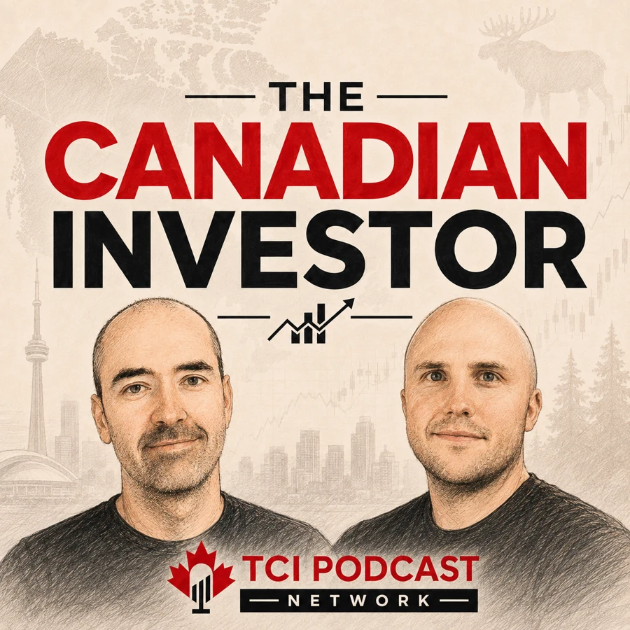
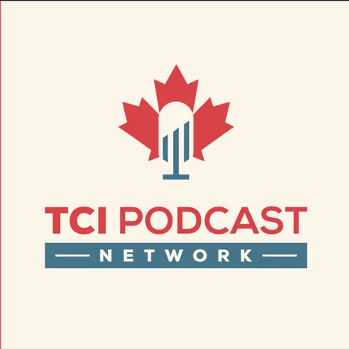
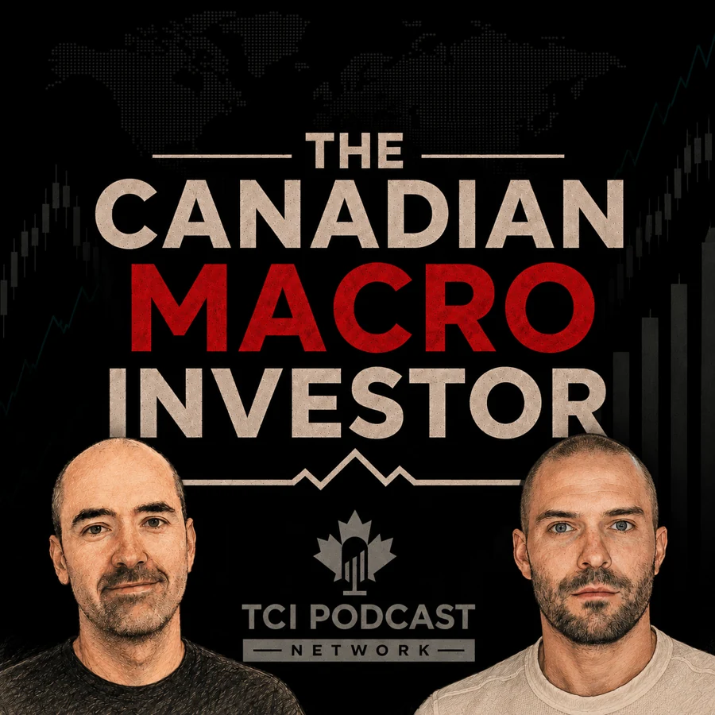

The Canadian
Investor.

Listen & followWith Simon, Daniel & Braden

TCI PODCASTNETWORKStocks, real estate and the economy, through a Canadian lens. Pick your show and follow it in your favourite podcast app.


Simon Belanger and Daniel Kent discuss Canadian M&A, Cobre Panama, Micron’s cycle, Carnival’s buybacks and the consumer signals in Nike and AutoZone.
Read the articleSimon Belanger and Daniel Kent examine AOL, EpiPen, BlackBerry and Nike—and the management decisions that weakened their competitive advantages.
Read the articleThe Canadian Investor
Follow SimonThe Canadian Investor
StocktradesThe Canadian Investor
Fiscal.aiThe Canadian Real Estate Investor
RealistThe Canadian Real Estate Investor
RealistPut your brand in front of curious Canadian investors through a partnership built for the right show and audience.
Explore what our hosts are building beyond the podcast.
Discover membership at Join TCI and take the next step beyond the podcast.
Tell us who would bring a useful perspective to one of our shows and why our audience should hear from them.
Send us a question about investing, real estate or the economy for a future episode.